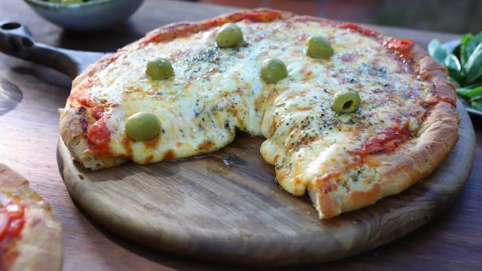

Pizza Recipe

This is perhaps the most easily pizza recipe you will find, and what's better than a
homemade food to try something new. We have all the information that you need.
Ingredients
Makes 4-5 pizzas
For the dough
- Flour 1000g (000 recommended)
- Water 500ml (room temperature)
- Salt 1 teaspoon (fine)
- Yeast dried 10g, fresh 25g
- Olive oil 5 teaspoons
For the sauce
- 1 Tomato puree (520g-600g)
- Salt
- Oregano
- dehydrated garlic
Cheese
Steps
- Combine water and yeast in a small bowl. Let stand until yeast softens and begins to form a creamy foam, about 5 minutes.
- Combine flour and salt together in the bowl. Pour in yeast mixture and olive oil. Knead dough until smooth, about 7 minutes.
- Place in the bowl; cover loosely. Let rise until doubled in volume, about 30 minutes.
- Preheat oven to 450 degrees F (230 degrees C).
- Cook the tomato puree while add the ingredients about 20 minutes.
- Separate the dough into buns. Grease 4-5 heavy-gauge rimmed baking sheet generously with olive oil. Press dough into the bottom. Prick dough all over with your hands. Cover with 1 cup sauce. Let pizza rise about 10 minutes
- When it is puffy, arrange mozzarella cheese slices over dough.
- Bake pizza until mozzarella cheese is melted